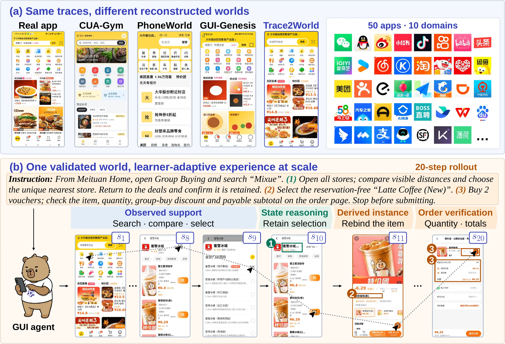
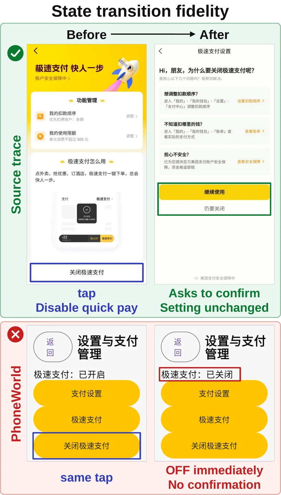
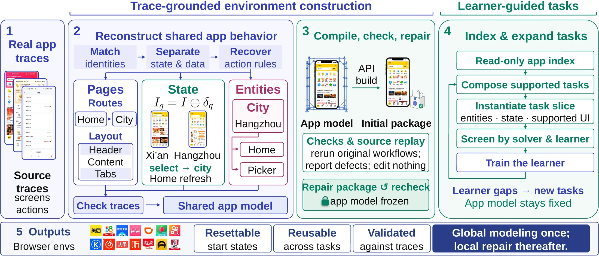
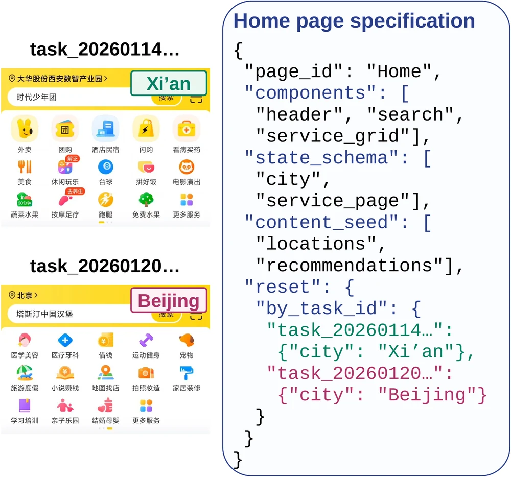
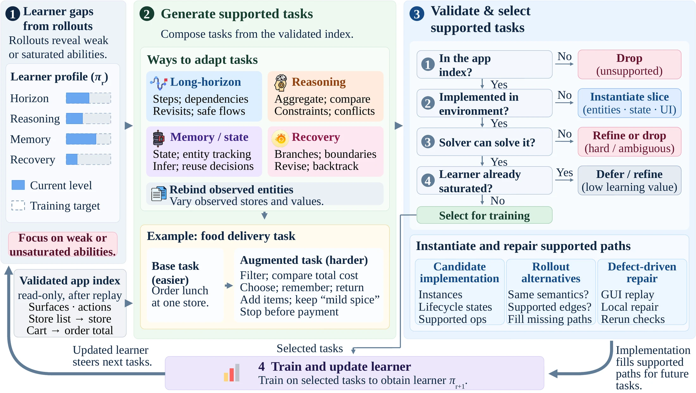
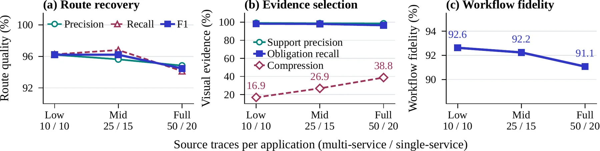
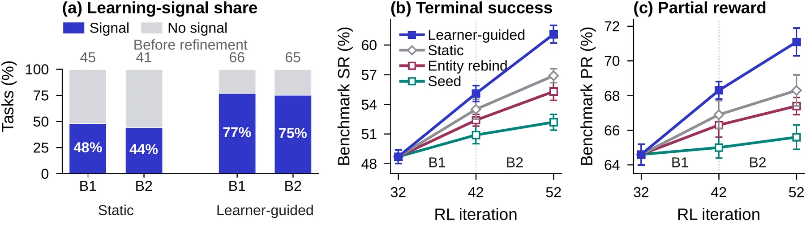

One resettable world per app, built by us from real traces. Every tile is a real, unedited
policy rollout inside a Trace2World environment: 100 rollouts across 20 reconstructed apps, each playing its own
unmarked observation sequence.
1,570
real-app source traces
50
resettable environments across 10 domains
91.1%
Workflow fidelity vs 59.8% strongest existing route
94.0%
of simulated gain kept on real devices vs 54.7% with self-validation
61.1%
Trace2World-Bench success, learner-guided vs 56.9% static generation
+16.3
points on a 100-task real-device panel

Fifty real apps rebuilt from traces into faithful, resettable worlds.
(a) From the same Meituan traces, topic-, task-, and screen-level construction (our CUA-Gym,
PhoneWorld, and GUI-GENESIS reimplementations) each yield a different Home; Trace2World reproduces the real one.
Right: all 50 apps. (b) One world, many tasks: a 20-step rollout of an augmented task no source trace
performs; three stages replay observed support, three add a state check, a derived instance, and order checks.
Abstract
Scaling GUI reinforcement learning requires environments that preserve real-app behavior. Yet coupling
behavior inference with coding can turn partial traces into runnable mocks with incorrect state
transitions. We introduce Trace2World, which separates global behavior reconstruction from
implementation. It reconciles traces into a shared, source-linked app model, then compiles an executable
environment. Independent replay of source workflows localizes mismatches for bounded implementation
repair. Validated worlds then support learner-adaptive task and environment augmentation within
source-supported behavior. From 1,570 traces, Trace2World constructs 50 environments. On 200 workflows
across ten apps, 91.1% are reproduced end to end, versus 59.8% for the strongest matched task-local
baseline. Source-grounded validation retains 94.0% of simulated training gains on real devices, versus
54.7% under self-validation. Learner guidance raises benchmark success from 56.9% to 61.1%. Training in
Trace2World further improves the model by 20.2 points on our benchmark, 5.4–16.2 points across four
external GUI benchmarks, and 16.3 points on 100 real-device tasks. Reliable reconstruction separates what
behavior source evidence supports from whether the implementation preserves it. The code and resources
are released.
Automating implementation does not automate reconstruction
Existing routes hand coding agents both the code and the semantics: CUA-Gym codes mocks
from topic specifications, GUI-GENESIS codes a task-local site from one trace, and PhoneWorld codes
mocks from recovered screen types and transitions. None asks which shared identities, initial states,
data, guards, or conflicting effects the traces actually support. Two failures follow.
1Structural reconstruction is not semantic reconstruction
Each trace observes one path from one initial state. Xi'an and Beijing may share a Home page with
different city values, while one control can have state-dependent effects. A transition graph cannot
identify the state condition behind an effect, so coding before reconciliation hardens one
interpretation into an app. Across our matched builds, routes reach 50.4–94.8% of endpoints
yet preserve only 16.7–59.8% of source workflows.
2A runnable app cannot certify its own fidelity
An implementation and the tests derived from the same interpretation can agree while both diverge
from the source. In Meituan, tapping Disable quick pay opens a confirmation without changing the
saved setting. Our PhoneWorld-style reconstruction disables it immediately yet passes a final-value
check, rewarding a policy for a transition the real app does not perform.
Which app semantics do partial traces actually support, and what evidence may
accept an implementation of them?

Same terminal value, wrong transition. The source confirms before saving; our
PhoneWorld-style build saves on tap. Both end disabled, so a final-value check passes both.
Method
Trace2World answers with two boundaries. It fixes app semantics from source evidence
before any code is written, and accepts an implementation only by independent replay of the source
workflows afterward. Learner feedback then decides which supported tasks are practiced, never what
the app means.

Semantic commitment before implementation, source acceptance afterward.
Trace2World reconciles partial traces into one source-linked model of shared pages, entities, state, and effects,
indexed as a semantic inventory; unresolved behavior remains non-executable. A builder implements the fixed
model, and source replay checks recorded workflows. Failures return to code repair or semantic
reconciliation; learner-guided tasks are composed from the validated inventory.
1
Reconcile app semantics across traces
Two observations may differ because they show different pages, different values of the same state,
or one entity on different surfaces. Trace2World matches repeated pages, action hosts, and entities using
containment, routes, lifecycle, and observed transitions, then separates stable structure from mutable
state and reusable data. Each effect links to the source step that shows its precondition and result;
if no observed condition explains a conflict, the conflict stays unresolved instead of being guessed.
2
Index a frozen semantic inventory
Supported relations become a source-linked inventory of canonical surfaces, hosts, entities, state and
data fields, legal actions, guards, effects, and observable outcomes, plus an information-dependency
graph. Indexing adds no behavior. Traces are reconciled in bounded shards: across all 50 apps the
largest model-visible call is 33.2K tokens under a 40K-token budget, with 99.1% audited semantic
coverage.
3
Build, then validate against the source
The builder implements the supported model as a standalone DOM-backed browser app with a central
state kernel; unsupported controls stay visible but inert. A read-only checker replays every recorded
workflow from reset and compares information, intermediate effects, and terminal state with the
source, without seeing the builder's model, verifier, or repair log. Implementation errors are repaired
(up to three waves); semantic mismatches return to reconciliation. No human QA is needed for acceptance.
4
Generate learner-guided tasks
The validated inventory becomes the task-authoring substrate. Generation may compose relations or
rebind observed entities and initial states, but cannot add a surface, field, guard, transition, or
dependency. A fixed stronger solver filters unsolvable candidates, and four current-learner attempts
keep tasks whose reward varies (SD > 0.1). One semantic reconstruction is amortized across
many tasks.

Two traces, one Home page. Xi'an and Beijing are supported initial values of the
same city state field. The task selects a reset value; subsequent behavior uses the shared page and
state-dependent action rules.
What the model commits to
Every supported interaction has a page and control, an action and guard, state or data reads and
writes, a destination, and a visible postcondition. The same rule serves multiple workflows without
copying a task-specific page.
What the builder may change
Rendering, routes, and storage. Source traces determine the app model; the builder cannot invent
app behavior. Compilation checks show that the app runs, source replay checks that it
matches.
Cost is not the reason it wins
Trace2World reconciles with GPT-5.2 and implements with GPT-5.5; compared builders receive GPT-5.5 in
every role they define. A Trace2World seed build averages an estimated 3.6 hours and 1,160 model calls per
app, below GUI-GENESIS-style (5.9 h, 2,415 calls) and near PhoneWorld-style (5.0 h, 1,118 calls).

Learner-guided tasks from a frozen semantic inventory. Task generation queries the
validated inventory rather than re-inferring the app: supported surfaces, fields, actions, and dependencies
compose a harder food-delivery task; learner gaps guide which patterns to sample, and source, GUI, solver,
and learner-signal checks screen candidates. Implementation repair fills supported paths without changing
the inventory.
Results
End-to-end reconstruction fidelity
All conditions use the same 200-workflow, ten-app set. Direct Agent, CUA-Gym, PhoneWorld-style,
and GUI-GENESIS-style are reimplemented on the same substrate, tools, runtime, and recordings. A blinded
reviewer compares anonymous executions with source recordings and assigns pass/fail to six diagnostics;
Workflow requires all six, Reach only the endpoint.
Reach Workflow
Direct + traces
53.6
16.7
CUA-Gym + traces
50.4
19.9
PhoneWorld-style
57.0
22.4
GUI-GENESIS-style
94.8
59.8
Trace2World
98.0
91.1
Endpoint reach hides semantic failure: every existing route reaches endpoints it cannot preserve.
Workflow fidelity and its six diagnostics (%). Ten-app macro means over 200 paired workflows.
Method
Overall
Structure
State
Data
Workflow
Reach
Surface
State
Effect
Terminal
Data
Direct w/o traces
5.2
28.4
14.8
22.7
15.0
15.9
12.8
Direct + traces
16.7
53.6
35.3
41.2
34.6
33.7
31.7
CUA-Gym w/o traces
8.2
34.4
20.0
29.0
22.6
21.5
19.6
CUA-Gym + traces
19.9
50.4
37.5
38.0
35.0
35.3
35.0
PhoneWorld-style
22.4
57.0
39.3
46.8
41.5
39.8
38.5
GUI-GENESIS-style
59.8
94.8
83.9
76.6
77.0
79.4
78.4
Trace2World
91.1
98.0
93.7
93.3
93.8
93.7
94.1
Control (not our method)
Self-validation
79.1
98.5
90.4
87.0
85.0
88.0
89.1
The task-local GUI-GENESIS-style build reaches 94.8% but passes 59.8%, with the State
that workflows share at 76.6%; Trace2World reaches 98.0% and passes 91.1%. The ordering is not explained by a
stronger constructor or reviewer bias: blind human relabeling agrees with the automated reviewer on 90.2% of
the same 1,200 packets, moves every route by only 1.4–3.8 pp, and keeps Trace2World 29.9 pp
above GUI-GENESIS-style and 12.8 pp above self-validation.

More source evidence expands the semantic inventory without collapsing fidelity.
From Low to Full, 100→290 traces expand supported routes 270→512 and visual obligations
553→1,076, while Workflow moves from 92.6% to 91.1%. Across all 1,570 source workflows, 74.6% pass
source replay on the first attempt and all close within the three-wave automated repair cap, without human QA.
Source-grounded validation decides how much gain transfers
The self-validation control changes only the validation evidence under the same construction stages
and inputs. Replacing source-trace validation with self-validation lowers Workflow from 91.1% to 79.1%
while Reach stays near 98%. Independent source rechecks reject 22/160 (13.8%) self-accepted executions
versus 1/176 (0.6%) source-accepted ones.
On a shared 100-task, 20-app real-device panel, source validation retains 94.0% of its
16.7-pp simulated gain on real devices (15.7 pp), versus 54.7% of 17.7 pp under
self-validation (9.7 pp). With training matched and simulated gains nearly equal, the rise in
simulation-only passes from 10.0% to 18.3% locates the loss in behavior the simulator accepts but the
device rejects.
Real-device transfer: gains over base on 100 paired tasks from 20 apps (pp; three-seed mean ± SD).
Metric
Matched stage-1 source
Stage 3
Self-validation
Source-trace validation
Ours
Real gain
9.7 ± 2.1
15.7 ± 1.5
16.3 ± 2.1
Sim. gain
17.7 ± 1.5
16.7 ± 2.1
18.7 ± 1.5
Real / sim gain
54.7%
94.0%
87.5%
Sim-only pass
18.3%
10.0%
10.7%
Learner-guided task generation
Four branches fork from the stage-1 policy for the same 20 RL iterations, environment revisions,
sampler, and evaluator. Across the two batches, 76.8/75.3% of guided tasks carry learning signal versus
47.9/44.0% for the static control. At iteration 52, Trace2World-Bench SR is 61.1% guided, 56.9% static,
55.3% entity rebinding, and 52.2% seed continuation. Budget does not substitute for feedback: training on all
validated candidates for 54 iterations reaches 57.8%.

Learner-guided task supply. (a) Selected tasks with/without learning signal (four-attempt
reward SD > 0.1). (b, c) Trace2World-Bench SR/PR for iteration- and rollout-matched continuations. Error bars show
three-seed SD.
Downstream policy performance
Qwen3.5-9B is trained with DAPO across three frozen stages: 1,280 seed tasks, then two 384-task
learner-guided batches (Ours). No task from the four external suites enters task generation, screening, RL,
or checkpoint selection. Our final policy gains 20.2 pp SR on Trace2World-Bench, 13.6 pp on apps excluded from policy
training, and 24.7 pp on evaluation-only two-app tasks although every training task is single-app.
Trace2World-Bench and MobileGym (MG) report SR / PR; AndroidWorld (AW) and AndroidDaily (AD) report SR;
MobileWorld (MW) reports GUI-only SR@50, all in percent.
Model
Trace2World-Bench (SR / PR)
MG SR / PR
AW SR
MW SR@50
AD SR
Entity repl.
Held-out workflow
Cross-app
Unseen apps
Overall
Proprietary models
Gemini 3.1 Pro
75.1 / 82.2
69.0 / 76.2
58.0 / 67.0
65.7 / 71.9
68.9 / 76.1
31.3 / 44.6
–
–
–
GPT-5.5
74.5 / 82.5
68.3 / 76.8
57.3 / 66.3
66.1 / 73.8
68.4 / 76.7
–
–
62.4
–
Qwen3.7-Plus
76.3 / 83.4
70.6 / 78.4
59.0 / 67.8
68.8 / 76.4
70.6 / 78.3
32.8 / 46.0
81.0
62.3
79.8
Open-source GUI agents
UI-TARS-1.5-7B
54.4 / 66.0
45.2 / 58.5
30.3 / 44.2
39.6 / 50.8
45.1 / 57.7
13.8 / 26.3
30.0
–
–
MAI-UI-8B
66.3 / 76.9
58.1 / 69.8
45.0 / 57.5
51.9 / 62.7
57.8 / 69.2
21.5 / –
70.7
27.5
–
UI-Venus-2-9B
64.2 / 75.0
56.8 / 67.5
44.7 / 56.0
52.8 / 61.4
56.8 / 67.2
52.7 / –
80.2
65.8
–
Controlled Trace2World environment training (Qwen3.5-9B)
Base policy
49.2 / 63.5
40.2 / 55.1
26.0 / 41.3
39.2 / 52.6
40.9 / 55.4
9.0 / 19.7
57.8
18.5
47.2
Stage-1 policy
57.0 / 72.6
48.6 / 65.1
35.3 / 52.0
44.3 / 58.9
48.7 / 64.6
15.8 / 28.4
60.1
21.9
51.9
Ours
68.4 / 78.9
62.4 / 71.8
50.7 / 60.5
52.8 / 63.7
61.1 / 71.1
25.2 / 40.7
63.2
27.4
58.3
Fifty environments, ten domains
All 50 apps provide construction traces and all 50 are reconstructed. Forty apps supply
policy-training tasks; ten held-out apps, one per domain, supply construction traces but no seed, candidate,
screening, or RL-update task. Collection follows a quota fixed before construction: 50 traces for each of the
19 apps with at least three independent service lines, 20 for each of the other 31 (950 + 620 = 1,570).
Every environment is a browser reimplementation with synthetic content; it connects to no real service.
Domain
Policy-training apps (40)
Held-out eval app (10)
Social & community
WeChat · QQ · Weibo · Xiaohongshu
Zhihu
News & short video
Kuaishou · Bilibili · Toutiao · Tencent News
Douyin
Long video & audio
iQIYI · Youku · NetEase Cloud Music · Kugou Music · Ximalaya
Default states of twenty formal browser environments (the human-audit roster), captured in
fresh browsers at a common viewport with no task-specific initialization. Click to enlarge.
Trace2World-Bench
One frozen evaluation view over the portfolio: 1,044 tasks, disjoint from every optimization
batch, with SR averaged over three attempts per task.
256
Entity replacementtraining-side workflow skeletons, new entities
Each environment is reconstructed from recorded traces of the real app. This is one of the
1,570: twenty steps in Meituan, from the home screen to the Flash-buy order page. Every frame is the original
screenshot with the recorded action marked, and its caption describes that action. A source trace is construction
evidence, so it carries no task checks and no reward.
· ·
Task instruction (zh)Source
Click a frame to enlarge it.
Case studies: step through two tasks
Two tasks in reconstructed environments: a 22-step Bilibili task within one app, and a
Railway 12306 → Didi → Railway 12306 task whose return to the train order depends on the fare read in Didi.
Step through each frame with its rationale and the task checks met so far.
The Bilibili task shows the marked observations and step rationale of an evaluation
rollout; frames with incorrect media bindings are replaced by marked replay captures from the repaired publication
package, and the last frame is its visible outcome. The Railway–Didi task presents the appendix's marked sequence with
synthesized step rationale and eight ordered task checks.
·
Task instruction (zh)Source & verification
Original observationCurrent action marked
Step rationalestep
Verification
○ Not met✓ Met+ Newly met− Lost this step
Verification reward
What is released
Trace2World is released as an environment-construction resource, not as a benchmark alone: the
source evidence, the reconstructed environments, the training-task supply, the evaluation sets, and the fidelity
records of the paper. Code lives on GitHub; the environments live in a Hugging Face dataset.
Component
Scale
Role
Source traces
1,570 traces / 50 apps
construction evidence; external fidelity authority
One process hosts the whole portfolio; every task starts from a task-conditioned initial
state and is fully reset between episodes. Rewards come from the frozen task evaluator; the source-trace
validation that certifies each environment is a separate reviewer and never supplies training reward. See the
repository README for the HTTP API, action space,
and the constructor (t2w-construct) that builds an environment from a trace set.
Citation
The preprint is being prepared; the entry will be updated with the arXiv identifier.
@article{wang2026trace2world,
title = {Trace2World: Reconstructing App Worlds from Real Interaction Traces for Scalable GUI Agent Training},
author = {Wang, Zezhou and Zhou, Hanzhang and Tong, Panrong and Kong, Quyu and
Li, Pengxiang and Hoi, Steven and Qian, Zhuzhong and Wang, Yue},
journal = {arXiv preprint},
year = {2026}
}